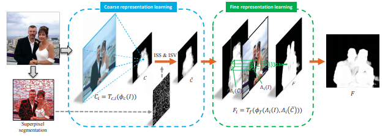
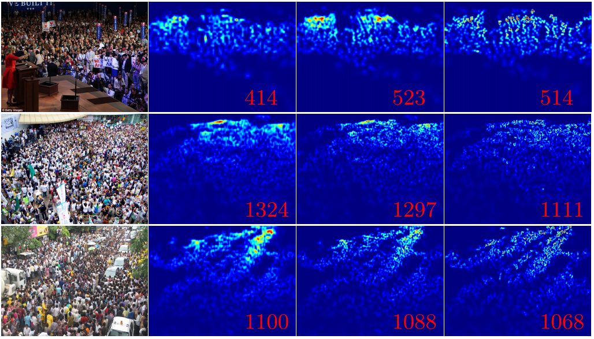

-
Online Metro Origin-Destination Prediction via Heterogeneous Information Aggregation.
Lingbo Liu, Yuying Zhu, Guanbin Li, Ziyi Wu, Lei Bai and Liang Lin.
IEEE Transactions on Pattern Analysis and Machine Intelligence (TPAMI), 2022. [JCR Rank 1]
[PDF] [Code] -
Hybrid-Order Representation Learning for Electricity Theft Detection.
Yuying Zhu, Yang Zhang, Lingbo Liu, Yang Liu, Guanbin Li, Mingzhi Mao and Liang Lin.
IEEE Transactions on Industrial Informatics (TII), 2022. [JCR Rank 1]
[PDF] [Code] -
Aerial Images Meet Crowdsourced Trajectories: A New Approach to Robust Road Extraction.
Lingbo Liu, Zewei Yang, Guanbin Li, Kuo Wang, Tianshui Chen and Liang Lin.
IEEE Transactions on Neural Networks and Learning Systems (TNNLS), 2022. [JCR Rank 1]
[PDF] [ProjectPage with Code] -
Unconstrained Face Sketch Synthesis via Perception-Adaptive Network and A New Benchmark.
Lin Nie, Lingbo Liu*, Zhengtao Wu, Wenxiong Kang.
Neurocomputing, 2022. [JCR Rank 2]
[PDF] [ProjectPage with Code&Data] -
TCGL: Temporal Contrastive Graph for Self-supervised Video Representation Learning.
Yang Liu, Keze Wang, Lingbo Liu, Haoyuan Lan and Liang Lin.
IEEE Transactions on Image Processing (TIP), 2022. [JCR Rank 1]
[PDF] [Code] -
Cross-Domain Facial Expression Recognition: A Unified Evaluation Benchmark and Adversarial Graph Learning.
Tianshui Chen, Tao Pu, Yuan Xie, Hefeng Wu, Lingbo Liu, Liang Lin.
IEEE Transactions on Pattern Analysis and Machine Intelligence (TPAMI), 2021, [JCR Rank 1]
[PDF] [Code & Dataset]
-
Physical-Virtual Collaboration Modeling for Intra-and Inter-Station Metro Ridership Prediction.
Lingbo Liu, Jingwen Chen, Hefeng Wu, Jiajie Zhen, Guanbin Li and Liang Lin.
IEEE Transactions on Intelligent Transportation Systems (TITS), 2020, [JCR Rank 1]
[PDF] [Code & Dataset] [BibTeX]
-
Dynamic Spatial-Temporal Representation Learning for Traffic Flow Prediction.
Lingbo Liu, Jiajie Zhen, Guanbin Li, Geng Zhan, Zhaocheng He, Bowen Du and Liang Lin.
IEEE Transactions on Intelligent Transportation Systems (TITS), 2020. [JCR Rank 1]
-

Crowd Counting via Scale-Communicative Aggregation Networks.
Lixian Yuan, Zhilin Qiu, Lingbo Liu, Hefeng Wu, Tianshui Chen, Pei Chen and Liang Lin.
Neurocomputing, 2020. [JCR Rank 2]
[PDF] (Extension of ICME work)
-
Deep learning-based investigation of wind pressures on tall building under interference effects.
Gang Hu, Lingbo Liu, Dacheng Tao, Song Jie and K C S Kwok.
Journal of Wind Engineering & Industrial Aerodynamics, 2020 (JWEIA). [JCR Rank 2]
[PDF]
-
Contextualized Spatial-Temporal Network for Taxi Origin-Destination Demand Prediction.
Lingbo Liu, Zhilin Qiu, Guanbin Li, Qing Wang, Wanli Ouyang and Liang Lin.
IEEE Transactions on Intelligent Transportation Systems (TITS), 2019. [JCR Rank 1]
-
Facial Landmark Machines: A Backbone-Branches Architecture with Progressive Representation Learning.
Lingbo Liu, Guanbin Li, Yuan Xie, Yizhou Yu, Qing Wang and Liang Lin.
IEEE Transactions on Multimedia (T-MM), 2019. [JCR Rank 1]
[PDF] [ProjectPage] [SYSU16K Dataset]
-

DISC: Deep Image Saliency Computing via Progressive Representation Learning.
Tianshui Chen, Liang Lin, Lingbo Liu, Xiaonan Luo and Xuelong Li.
IEEE Transactions on Neural Networks and Learning Systems (TNNLS), 2016. [JCR Rank 1]
[PDF] [Code] [ProjectPage]
Journal Papers (* indicates I am the paper’s corresponding author)
-
Multimodal Crowd Counting with Mutual Attention Transformers.
Zhengtao Wu, Lingbo Liu, Yang Zhang, Mingzhi Mao, Liang Lin and Guanbin Li.
IEEE International Conference on Multimedia and Expo (ICME), 2022. [CCF B]
[PDF]
-

Cross-Modal Collaborative Representation Learning and a Large-Scale RGBT Benchmark for Crowd Counting.
Lingbo Liu, Jiaqi Chen, Hefeng Wu, Guanbin Li, Chenglong Li and Liang Lin.
IEEE Conference on Computer Vision and Pattern Recognition (CVPR), 2021. [CCF A]
-
GroupFormer: Group Activity Recognition with Clustered Spatial-Temporal Transformer.
Shuaicheng Li, Qianggang Cao, Lingbo Liu, Kunlin Yang, Shinan Liu, Jun Hou and Shuai Yi.
IEEE International Conference on Computer Vision (ICCV), 2021. [CCF A]
-
GeoQA: A Geometric Question Answering Benchmark Towards Multimodal Numerical Reasoning.
Jiaqi Chen, Jianheng Tang, Jinghui Qin, Xiaodan Liang, Lingbo Liu, Eric Xing and Liang Lin.
Annual Meeting of the Association for Computational Linguistics (ACL), 2021. [CCF A]
-

Representative Local Feature Mining for Few-Shot Learning.
Kun Yan, Lingbo Liu, Jun Hou and Ping Wang.
IEEE International Conference on Acoustics, Speech & Signal Processing (ICASSP), 2021. [CCF B]
[PDF]
-
Efficient Crowd Counting via Structured Knowledge Transfer.
Lingbo Liu, Jiaqi Chen, Hefeng Wu, Tianshui Chen, Guanbin Li and Liang Lin.
Proc. of ACM International Conference on Multimedia (ACM MM), 2020. [CCF A]
[PDF] [BibTeX] [Code & Models.]
-

Crowd Counting with Deep Structured Scale Integration Network
Lingbo Liu, Zhilin Qiu, Guanbin Li, Shufan Liu, Wanli Ouyang and Liang Lin.
IEEE International Conference on Computer Vision (ICCV), 2019. [CCF A]
-

Crowd Counting via Multi-View Scale Aggregation Networks
Zhilin Qiu, Lingbo Liu, Guanbin Li, Qing Wang, Nong Xiao and Liang Lin.
IEEE International Conference on Multimedia and Expo (ICME), 2019. [CCF B]
-

Crowd Counting using Deep Recurrent Spatial-Aware Network.
Lingbo Liu, Hongjun Wang, Guanbin Li, Wanli Ouyang and Liang Lin.
Proc. of International Joint Conference on Artificial Intelligence (IJCAI), 2018. [CCF A]
[PDF]
-

Attentive Crowd Flow Machines.
Lingbo Liu, Ruimao Zhang, Jiefeng Peng, Guanbin Li, Bowen Du and Liang Lin.
Proc. of ACM International Conference on Multimedia (ACM MM), 2018. [CCF A]
Conference papers
-

Road Network Guided Fine-Grained Urban Traffic Flow Inference.
Lingbo Liu, Mengmeng Liu, Guanbin Li, Ziyi Wu and Liang Lin.
[PDF]Submit to Journal.
-
Video Crowd Localization with Multi-focus Gaussian Neighbor Attention and a Large-Scale Benchmark.
Haopeng Li, Lingbo Liu, Kunlin Yang, Shinan Liu, Junyu Gao, Bin Zhao, Rui Zhang and Jun Hou.
[PDF]
Submit to Journal.
-
Heterogeneous Semantic Transfer for Multi-label Recognition with Partial Labels.
Tianshui Chen, Tao Pu, Lingbo Liu, Yukai Shi, Zhijing Yang, Liang Lin.
[PDF]
Submit to Journal.
Preprints